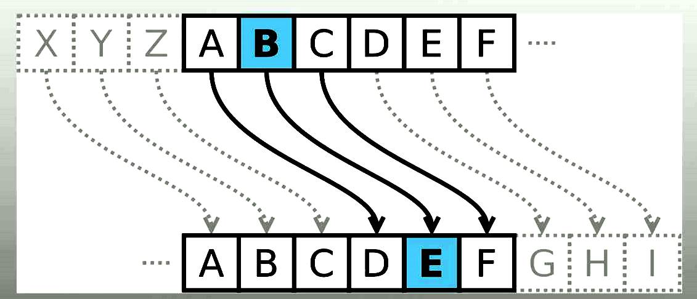

El Cifrado de Caesar es uno de los métodos de codificación conocidos más
antiguos. Es muy simple - sólo se cambian las posiciones del alfabeto.
La transformación se denomina ROTN, donde N es el valor de cambio de
posiciones y ROT significa "ROTAR", por que es un cambio cíclico. Por
ejemplo, ROT2 significa que "a" se vuelve "c", "b" se vuelve "d" y al
final "y" se vuelve "a", y "z" se vuelve "b". La cantidad de
transformaciones posibles depende de la longitud del alfabeto. Para
Inglés sólo llega a 25 (ROT0 a ROT26 no cambian el texto original).
Debido a eso, es un método muy débil, ya que puedes revisar todas las
combinaciones posibles de manera muy rápida. La calculadora a
continuación muestra la tabla con todas las transformaciones posibles.
Los símbolos no-alfabéticos como espacios y dígitos no cambian.
